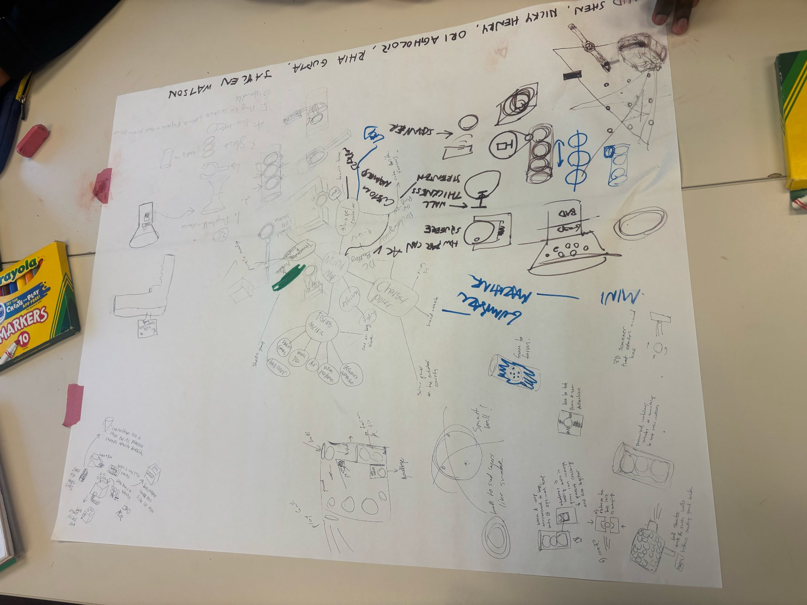
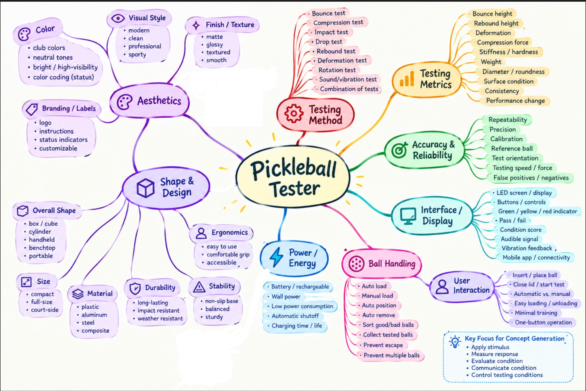
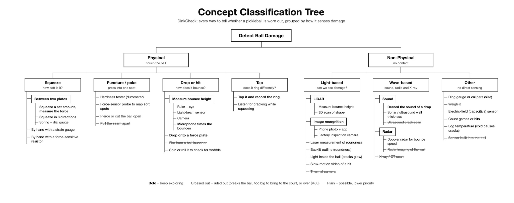
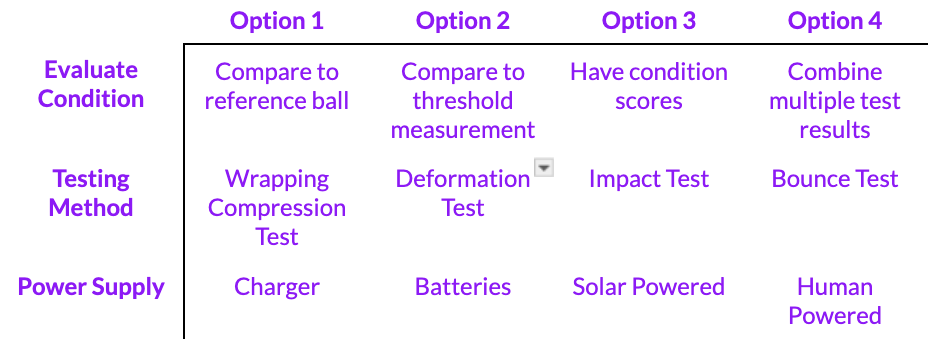

Gate Review 2 · Concept & Prototyping
Conceptualization Methods
The team started with one question from Gate Review 1, how can a player know a ball is still good, and used seven methods to open it up. Each method looked at the problem from a different side: physical form, product features, required functions, sensing physics, combinations of options, solutions that already exist in other sports, and AI-assisted visualization.
1. Brainstorming and rapid sketching

How we applied it. All five members sketched on one shared sheet, building on each other's drawings. The session concentrated on how a player would hold and operate a tester, how the ball would sit in it, and how the result would be shown, rather than on the measurement itself.
What it addressed. Portability, ease of use and a quick keep-or-retire decision: the needs not bulky, requires minimal changes to existing practices and fast analysis in the QFD [1].
Inputs. Team intuition and our own experience as players. This session drew less on the survey than later methods did, so its ideas were treated as starting points to test, not conclusions.
What it produced. Early forms for the device: a tube that holds several balls, a bench box that squeezes the ball, a handheld unit with a grip, a scanner that rotates the ball, and power by hand crank or solar panel for courts without outlets.
How it influenced later work. The handheld and bench forms carried through to the top concepts (the test gun and the compression station), and the rotating-scanner sketch reappeared as the rollers that turn the ball in CuPickle.
2. Mind map

How we applied it. We placed the tester at the centre and branched outward into testing method, testing metrics, accuracy and reliability, interface and display, ball handling, user interaction, power, shape and aesthetics, listing options under each.
What it addressed. Reliable condition assessment, ease of use, portability and clear communication of the result, the customer needs ranked highest in Gate Review 1 [1].
Inputs. The prioritized customer needs from the survey and interviews, and the ideas from the brainstorming session.
What it produced. Nine test types (bounce, compression, impact, drop, rebound, deformation, rotation, sound or vibration, and combinations), ten candidate metrics, and the most important insight of the session: the tester must be accurate and repeatable, which led to the ideas of a reference ball and a calibration step. The team also agreed the five functions every concept must perform: apply a stimulus, measure the response, evaluate condition, communicate the result, and control the test conditions.
How it influenced later work. The branches became the rows of the combinational table, and “compare with a reference ball” became the grading rule in the selected concept.
3. Functional decomposition
How we applied it. We described what the tester must do as verb–noun functions linked by flows of material (the ball), energy and signal, without naming any part.
What it addressed. The overall function, determine playability, and the subfunctions that most affect value: apply force, measure ball properties, determine softness.
Inputs. The mind map's five agreed functions and the Gate Review 1 requirement that testing must not damage the ball.
What it produced. Separate option lists for each function: five ways to secure the ball, five to rotate it, three to apply force, two control modes, three sensors and two decision rules.
How it influenced later work. Choosing one option per function produced the CuPickle architecture. The diagrams and option table are on Functional Decomposition.
4. Concept tree and internal searching

How we applied it. We classified every way to tell whether a ball is worn out by the physical effect it senses: squeeze, poke, drop, tap, light, waves, or indirect estimates.
What it addressed. The primary function, detecting ball damage, and specifically the hidden softening that players cannot see.
Inputs. Gate Review 1 secondary research on how balls degrade, the USA Pickleball ball standards, and the patents and products found during benchmarking.
What it produced. About fifty methods in seven branches. Reviewing the first version for sparse branches added twelve new ideas, including tapping the ball at many spots while it turns.
How it influenced later work. Four branches (squeeze, tap, drop and sound) were kept for concept development, and pruning filters drawn from the QFD removed destructive, unaffordable and unsafe methods.
5. Combinational table

How we applied it. We took three functions from the mind map, how to evaluate condition, how to test, and how to power the device, listed four options for each, and combined one option from each row.
What it addressed. How the device applies a stimulus, how it decides whether a ball is still playable, and where its energy comes from: the needs for reliable assessment and convenient courtside use.
Inputs. The options listed in the mind map, refined in team discussion.
What it produced. Whole-system concepts instead of isolated features. The top concepts can be read as paths through the table:
| Concept | Evaluate condition | Testing method | Power supply |
|---|---|---|---|
| A. Rolling Compression Station (CuPickle) | Compare to reference ball | Deformation test | Charger (12 V supply) |
| B. Three-prong fork | Compare to threshold measurement | Deformation test | Not specified |
| C. Instrumented glove | Compare to threshold measurement | Deformation test (by hand) | Batteries |
| D. Test gun | Condition score | Deformation test | Not specified |
| E. CubeClamp | Combine multiple test results (stiffness, hysteresis, bulge) | Deformation test | Not specified |
Table 2. The top concepts mapped onto the combinational table.
How it influenced later work. The mapping shows that all five top concepts use a deformation test, the method most directly tied to stiffness, and that power remains the least explored row. Solar and human power were not developed further, which is why courtside power is still an open question for the selected concept.
6. External search and analogy
How we applied it. We looked at how other sports and industries already test balls and hollow parts, and borrowed principles from unrelated fields.
What it addressed. Measurement credibility: whether a method has been proven, and what standard it could be checked against.
Inputs. Manufacturer quality-control methods, tennis and golf ball testers, patents on resonance inspection of steel balls and composites, and the USA Pickleball standard [2][3].
What it produced. The two-plate squeeze tester with a dial gauge (tennis and golf ball testers), squeezing along three axes (the ITF tennis ball tester), resonance tap testing, rotating rollers from automated ball-inspection rigs, and, by analogy with the optometrist's eye-pressure test, an air-puff dent test.
How it influenced later work. Prior art supplied the measurement principle the selected concept relies on. The compression test is how the USA Pickleball standard checks new balls [2], and rotating a ball on rollers to inspect it at many positions is proven in ball-inspection rigs [3].
7. AI-assisted visualization


Figure 5a. Renders and drawings produced by prompting an AI design tool: the CuPickle housing (left) and the CubeClamp section (right).
How we applied it. Each member turned their concept into renders, section drawings and short animations by describing it to an AI design tool, then revised it through follow-up prompts. A typical prompt specified one change at a time and how to show it, for example: remove the oval notch on the side of the housing, add a 20 × 12 × 4 mm finger-pull recess beside the door's free edge so the door overhangs it, and show a close-up of a finger under the edge and a view with the door open at 90° [5].
What it addressed. Form, interaction and fit: how a player opens the tester, loads a ball and reads the result, the emotional and aesthetic qualities in the QFD, and whether parts physically fit together.
Inputs. The top-concept descriptions, the CAD parts list, and the QFD targets for user actions and packed volume.
What it produced. The enclosed CuPickle housing, with a windowed door, finger-pull recess and lime seam carried over from the CubeClamp's look; and the animation that exposed the CubeClamp's loading problem: its 40 mm opening cannot admit a 74 mm ball.
How it influenced later work. The loading finding weighed against the CubeClamp in downselection, and the housing renders became the proposed concept's form. The renders are visualizations, not engineering models; dimensions still come from the CAD model and prototype.
Breadth of the design space, and its limits
| Design dimension | Different approaches the methods produced |
|---|---|
| Primary function (sense condition) | Squeeze, poke, bounce, tap, sound, light, radar, use-history estimates |
| Auxiliary functions (hold and present the ball) | Roller cradle, three-prong fork, cone seat, the player's own hand, handheld cradle |
| Energy flow | Motor and lead screw, solenoid tapper, human squeeze, gravity drop; wall, battery, solar or hand-crank power |
| Information flow | Absolute threshold, ratio to a reference ball, condition score, pass/fail light, wrist display |
| Usability, aesthetics and emotion | Bench instrument that feels like a pro-shop diagnostic, handheld gun, wearable glove, color and finish options |
| Business, safety and manufacturing constraints | Off-the-shelf parts under $400, no destructive testing, no X-ray, no sensor inside the ball |
Table 3. How far the methods spread across the design space.
The search was bounded on purpose by the producer constraints: a $400 prototype budget, parts buildable in class, and completion within the semester. Methods that destroy the ball, cost far more than the budget, or would change the ball itself were set aside early. Two further limits shaped the result. Brainstorming relied on the team's own play experience more than on customer evidence, and power and aesthetics were explored less deeply than sensing. Finally, the team assumes that stiffness is the property that best predicts how a ball plays. That assumption is supported by published wear tests [4] but has not yet been checked against players' own judgments.
References
- [1] Team 1, QFD workbook and submission, ME 455, 2026. See House of Quality.
- [2] USA Pickleball, Equipment Standards Manual, Rev. 3.0, Jan. 2025, rules 2.D.3–2.D.6. usapickleball.org
- [3] Team 1, “Pickleball Ball-Health Testing: Squeeze and Acoustic Tap Methods,” test-method summary with prior-art review (tennis, golf and bearing-ball testers), ME 455, Oct. 2026.
- [4] Pickleball Science, “How Many Games Will a Pickleball Last?” Mar. 15, 2023. pickleballscience.org
- [5] Team 1, prompt log for the CuPickle housing renders (v5 → v6: finger-pull recess), Oct. 2026.